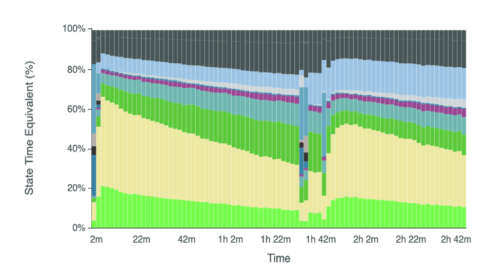

Sequencing settings
Sequencing settings for tRNA
MinKNOW is the operating software that coordinates setting up a sequencing run on an ONT sequencing device (e.g., a MinION or PromethION). It captures and optionally basecalls your data during the run, and monitors and responds to feedback from flow cells in real time. The first step in setting up a run is selecting the appropriate settings (e.g., making sure the parameters match the flow cell type and sequencing kit you used to prepare and load your library). For tRNA, this involves some extra steps.
Why use custom sequencing settings for tRNA?
Back when we first started making tRNA sequencing libraries using the approach from Thomas et al. 2021 and running them with default parameters, our runs looked like this:

Note the high proportion of “adapter-only” reads (beige bar) relative to the bright green bar that MinKNOW believes are genuine sequencing reads. Lucas et. al 2023 expertly dissects the reasons behind this issue. In brief, MinKNOW’s default settings expect the adapter portion of reads (or adapter-only reads) to transit through the pore in 5 seconds or less, and expect the remaining portion of the RNA molecule (that is, the thing you’re actually looking to sequence), termed the strand, to take at least 2 seconds to pass through the pore. These default settings from ONT were selected with mRNA sequencing in mind.
tRNA molecules are much shorter than mRNA and in many cases, the strand portion of the read can pass through the pore in under two seconds. The Novoa lab demonstrated that lowering the minimum threshold at which MinKNOW classifies the strand portion of read from 2 seconds to 1 second, combined with lowering the maximum duration for adapter signal from 5 seconds to 2 second, increased the throughput of tRNA sequencing by over an order of magnitude, suggesting that the default RNA sequencing parameters classify many tRNA reads as free adapter.
TLDR: If you don’t want most of your reads to be inadvertedly discarded, you need to take some extra steps before** you begin sequencing tRNA libraries.**
NB: To the best of my knowledge, MinKNOW senses the break between adapter and strand portions of a read by looking for signal from the RTA adapter; by default, neither this adapter sequence nor the adjoining poly(A) tail will be incorporated into the FASTQ produced during basecalling. In contrast, the sequence from the double stranded adapters ligated to tRNA ends in the first step of nanopore sequencing protocols is basecalled and incorporated into the read sequence stored in the FASTQ files.
Enabling short read mode in MinKNOW
RNA short mode setup
We wanted to be able to use a custom MinKNOW configuration for tRNA in real time during sequencing. To do this, we need to make a few changes to the MinKNOW software.
MinKNOW’s configuration files live at the following locations:
- In Linux:
/opt/ont/minknow/conf/package/ - In MacOS:
/Applications/MinKNOW.app/Contents/Resources/conf/package/
You will need root permissions to edit and add files in the /package/ folder. We have done this as follows:
- At the bottom of
flow_cells.toml, add the following lines:
# custom configs
[FLO-FLG001_short]
connector = "flongle"
[FLO-MIN106_short]
connector = "minion_mk1"
[FLO-PRO002_short]
connector = "promethion"- Navigate to the
/sequencing/folder and identify the.tomlfiles for direct RNA sequencing (sequencing_MIN106_RNA.tomlfor MinION andsequencing_PRO002_RNA.tomlfor PromethION). Copy the relevant file(s) to create a second version appended_short, e.g.:
sudo cp sequencing_PRO002_RNA.toml sequencing_PRO002_RNA_short.toml - Open the new
_shortversion of theRNA.tomlfile and find the section containing the Read Classification Parameters. It should look like this:
[analysis_configuration.read_classification.parameters]
rules_in_execution_order = [
"multiple= (median,gt,350)&(median,lt,990)&(local_median_sd,gt,2)&(duration,gt,0.1)",
"pore_1= (local_median,gt,160)&(local_median,lt,280)&(median_sd,gt,0.9)&(median_sd,lt,5)&(local_range,lt,35)&(duration,gt,15)",
"pore= (median,gt,160)&(median,lt,280)&(median_sd,gt,0.6)&(median_sd,lt,5)",
"event= (median_before,gt,160)&(median_before,lt,280)&(median_before,gt,median)&(median,lt,160)&(median,gt,20)&(duration,lt,0.1)&(event_count,lt,10)",
"adapter= (median_before,gt,160)&(median_before,lt,280)&(local_range,gt,5)&(local_range,lt,50)&(local_median,gt,50)&(local_median,lt,120)&(local_median_sd,gt,0.5)&(local_median_sd,lt,2.5)&(duration,lt,5)",
"strand= (local_range,gt,25)&(local_range,lt,60)&(local_median,gt,60)&(local_median,lt,115)&(local_median_sd,gt,1)&(local_median_sd,lt,4)&(duration,gt,2)",- Edit the last number on each of the final lines above so that the duration for
adapterends inlt,2and the duration forstrandends ingt,1. These are the thresholds in seconds described above.
The approach above has been tested for R9.4 Flongle and MinION flow cells running on a MK1B MinION connected to M1 Macbook Pro running MacOS Ventura, and on R9.4 flow cells running on a beta PromethION 24 connected to a desktop running Ubuntu 20.04. Both of these combinations were tested with MinKNOW version 23.04.3.
Starting a tRNA sequencing run in short mode
After making the changes above and restarting MinKNOW, FLO-MIN106_short and FLO-PRO002_short will be available as drop down options under Flow Cell Type. Once you select one of these, Direct RNA Sequencing should be the only kit available on the subsequent page. You can set up the rest of the sequencing run in MinKNOW as normal.
Do you have versions of these files I can just use instead of editing code by hand?
Yes. You can find them in the companion repository here, but caveat emptor. The MinKNOW software undergoes frequent updates, and using an outdated .toml file may break your ability to run RNA short mode live. At a minimum, you will want to update the [compatibility] section of the .toml to match the MinKNOW core and Bream versions to whatever version of MinKNOW you’re using. You can find these in the MinKNOW UI under Host Settings > Software, and then mousing over the text Installed Version to get a text box on hover.
Alternative approach: simulating runs from bulk fast5 files
The Novoa lab’s Lucas et. al 2023 has an accompanying README within the nano-tRNAseq repository for setting up alternative configurations.
As present, this workflow involves:
- rsyncing custom
*RNA_short.tomlandflow_cells.tomlconfig files containing the same changes to duration parameters described above - saving out a bulk fast5 file
- editing the
*RNA_short.tomlfile to add a path to the bulk fast5 file - running a sequencing simulation in MinKNOW from the bulk fast5 file
The .toml config files in this repo are from a much older version of MinKNOW, and we couldn’t get them working for real time tRNA sequencing. Since sequencing simulations are pretty cumbersome and bulk fast5 files take up a lot of space, we opted instead to edit more recent versions of the sequencing .toml files and run short mode live.
However, if you’re interested in running simulations to test different MinKNOW parameters on the same data, I recommend checking the nano-tRNAseq repository above as well as the documentation for ReadFish from Matt Loose’s lab. Pay particular attention to the list of GOTCHAs on the ReadFish README! If you forget you’re running a .toml file that contains a simulation path to a bulk fast5, bad things can and likely will happen.